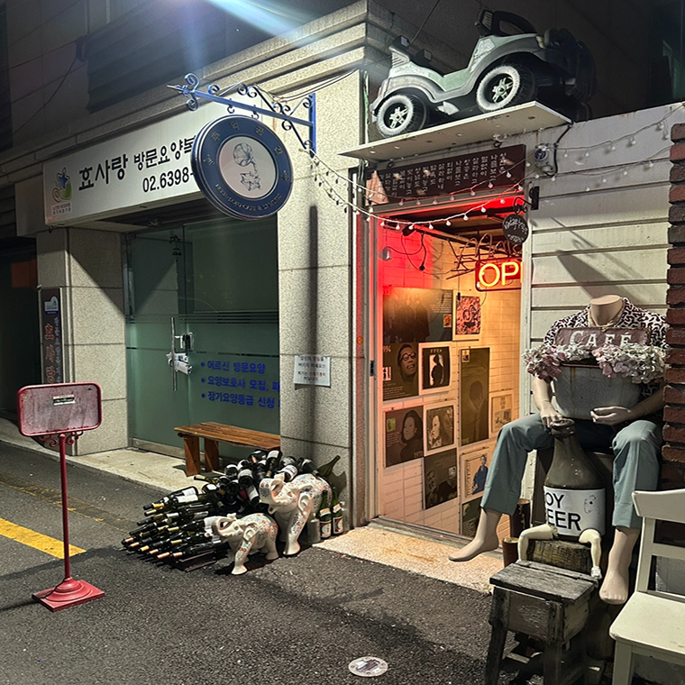
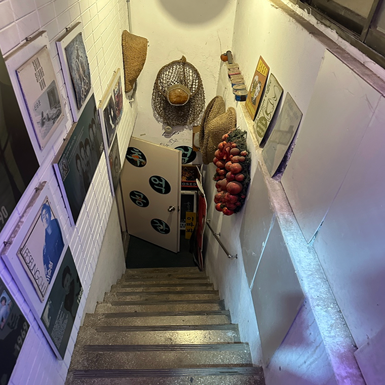
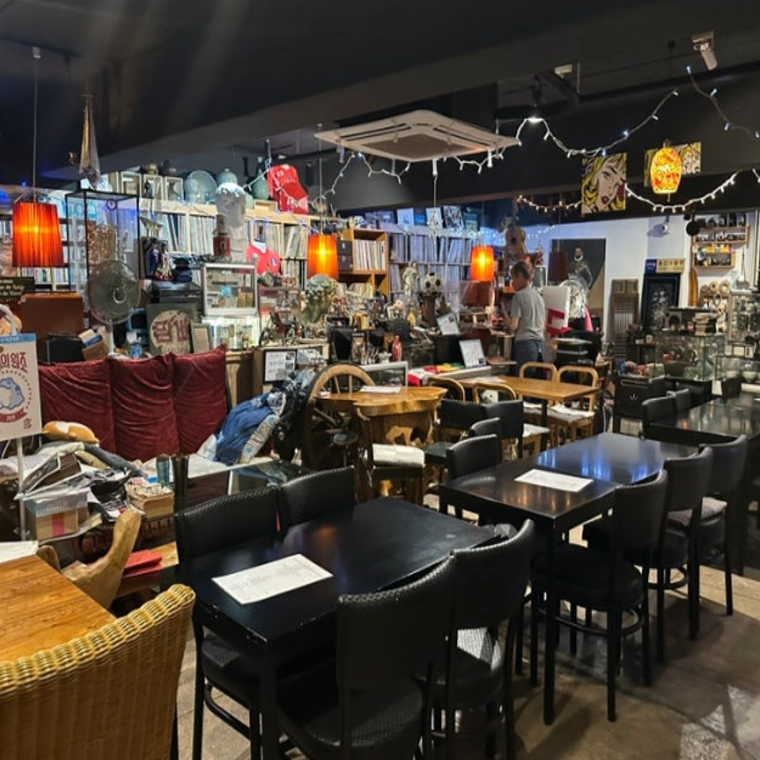
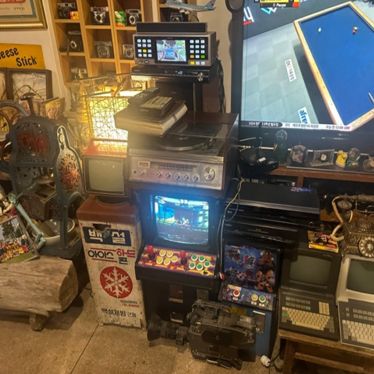
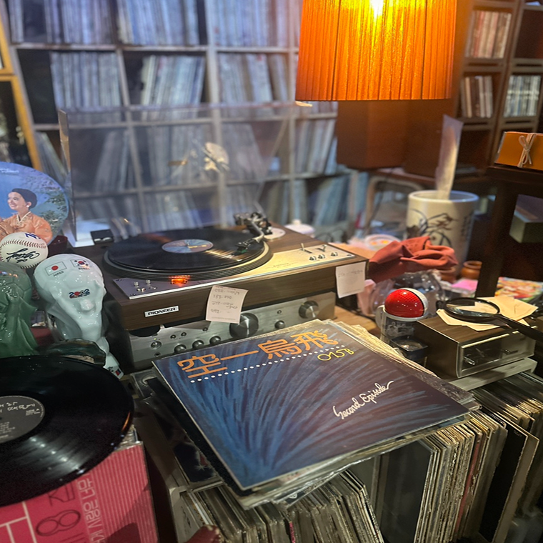
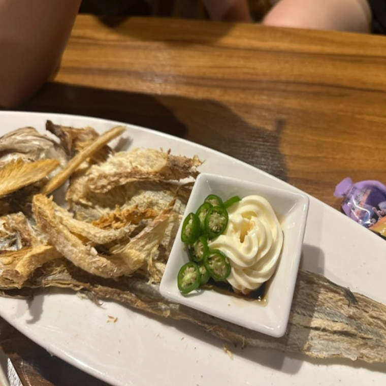

Bar
Chuoekgongan
A place that feels like a modern museum curated by one man.
12.12.2025
Posted by Gayoung Han
I first discovered this place by chance a few years ago while walking down the street. It turned out to be less than a five-minute walk from places I frequented, yet I had always passed by without noticing it—simply because it was tucked away underground. One day, my steps finally slowed, and I decided to head down.
The staircase leading underground was already strikingly unique, but what truly surprised me was the moment I stepped inside. I’ve seen many places decorated with antiques before, but this felt different. It was as if an entire museum had been carefully relocated into a basement.
 The owner shared that he had been collecting antiques for over 30 years. He originally stored his growing collection in a rented basement, and over time, that space naturally evolved into a bar. Rather than designing a concept, the place became what it is simply by housing his passion.
 Inside, you’ll find an impressive number of items from 1970s Korea in particular. From LP records to old train destination boards, the collection spans a wide range of objects, each with its own quiet presence and history.
As for drinks, the menu is simple—just soju and beer. My personal recommendation for food is meoktae, one of Korea’s classic dried snacks. It pairs especially well with beer, and I highly suggest giving it a try.
Chuoekgongan
Address | Seoul Yongsan-gu
Opening Hours
18:00 - 21:00 (Mon-Fri)
17:00 - 23:00 (Saturday)
About Curator

Gayoung Han
A local photographer who loves discovering places with historical charms
Around here

Cafe
Braed o.o.o.o
A place where the internet becomes edible
1km from Iteawon

Bar
Zoosindang
Where the space feels absolutely like a shrine
3km from Iteawon

Park
Hyochang park
Where the space feels just like a 404 page
4km from Iteawon
Stay Exploring
Join our free newsletter for curated Seoul finds.